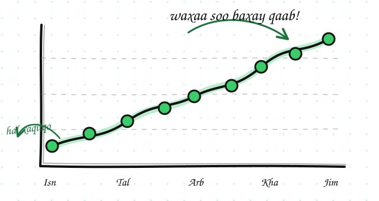
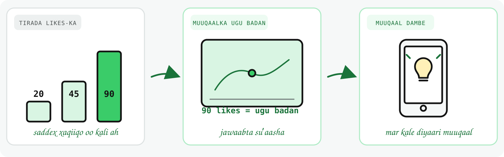

Cutubka 1aad · Casharka 1aad ee 5-ta cashar
Waa maxay xog?
Dhammaadka casharkan
Waxaad awoodi doontaa inaad sharaxdo waxa loola jeedo xog (data), isla markaana kala saarto xog, macluumaad (information), iyo faham muhiim ah (insight).
Dulmar
Waxaad eegtaa telefoonkaaga oo waxaad aragtaa lacag mobile money ah oo dhan $25, app-ka cimilada oo muujinaya 32°C, iyo fariin iskuulka ka timid oo ku saabsan xaadiritaankaaga.
$25
lacag mobile money ah oo dhan $25
32°C
app-ka cimilada oo muujinaya 32°C
xaadiritaan
fariin iskuulka ka timid oo ku saabsan xaadiritaankaaga
Mid kasta waa xog (data): xaqiiqo yar oo ku saabsan wax jira ama dhacay. Si aad xogta u fahanto, marka hore waa inaad jawaab cad u heshaa suʼaashan: “Waa maxay xog?”
Waa maxay xog (data)?
Xog (data) waa xaqiiqooyin laga ururiyey wax jira ama dhacay. Waxay noqon kartaa tiro, eray, ama cabbir.
Xaqiiqo
xaqiiqooyin yar-yar oo dunida ku saabsan
XAQIIQO
$25
lacag lagu diray mobile money
CABBIR
32°C
cabbirka heerkulka
OGAANSHOjooga
Xogtu badanaa sheekadoo dhan ma sheegto
Tusaalooyin:
Lacag lagu diray mobile money
$25
Qiimaha bariiska
$2.50 halkii kg
Xaadiritaanka ardayga
jooga
Qiimaha alaabta
$49.99
Cabbirka heerkulka
32°C
Mid kasta waa hal xaqiiqo. Marka xog badan la isu geeyo oo la habeeyo, waxaa ka soo baxa macne naga caawinaya inaan fahanno waxa dhacaya.

Xog (Data), Macluumaad (Information), iyo Faham Muhiim ah (Insight)
Ereyga
Macnaha
Xog (Data)
Xaqiiqooyin aan weli la habayn
Macluumaad (Information)
Xog la habeeyey oo suʼaal ka jawaabaysa
Faham muhiim ah (Insight)
Faham laga helay xog oo kaa caawinaya goʼaan qaadasho
Tusaale fudud: Facebook
Waxaad Facebook soo dhigtay sawir, qoraal, iyo muuqaal. Waxay heleen 20, 45, iyo 90 likes.

Xog → Macluumaad → Faham muhiim ah
Tirooyinka likes-kaas waa xog.
Ogaanshaha in muuqaalku helay likes-ka ugu badan waa macluumaad.
Dadka boggaaga la socda waxay u muuqdaan inay muuqaalka ka jecel yihiin sawirka iyo qoraalka. Sidaas darteed, waxaad mar kale diyaarin kartaa muuqaal. Taasi waa faham muhiim ah.
Halkee ayaan xog ku aragnaa maalin kasta?
Waxaan xog ku aragnaa nolol maalmeedkeenna:
Lacagaha mobile money-ga
Darajooyinka iyo xaadiritaanka iskuulka
Qiimaha suuqa
Likes-ka iyo faallooyinka baraha bulshada
Heerkulka iyo saadaasha hawada
Shirkadaha, iskuulada, isbitaallada, iyo dawladuhu waxay xogta u isticmaalaan inay wax fahmaan oo ay goʼaanno gaaraan.